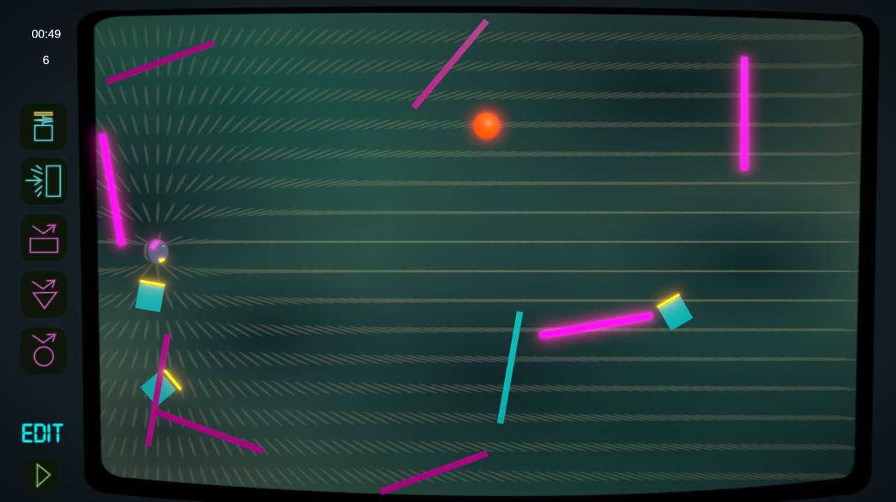

Le jeu démarrait avec un timer et 0 points,
la balle (en métal) est suspendue en l'air,
et le but est de placer des objets
pour que la balle touche la cible quand on clique sur Play.
Une fois que la cible est atteinte le joueur gagne 1 point et 20 secondes,
et la cible réapparait à un autre endroit.
La difficulté provient du fait que quand on touche la cible,
on ne peut plus toucher aux objets sur le terrain.
Le joueur créée donc son propre désordre jusqu'à ce que le timer arrive à 0,
le but est de faire le meilleur score.